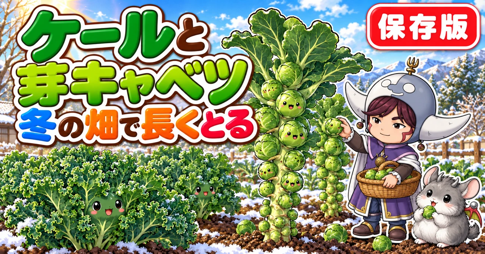
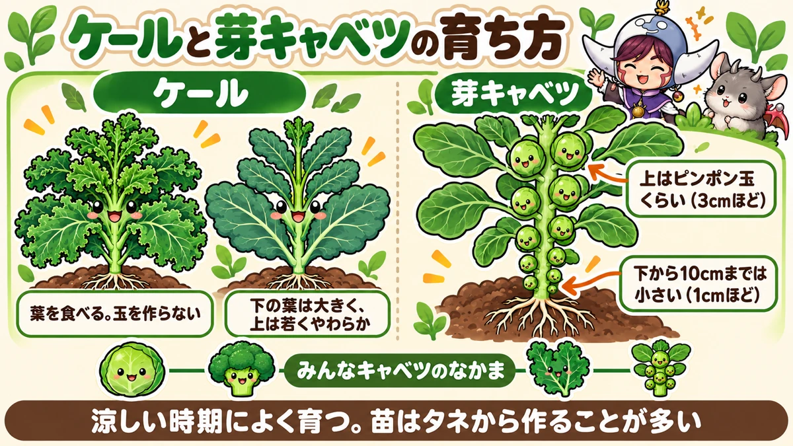
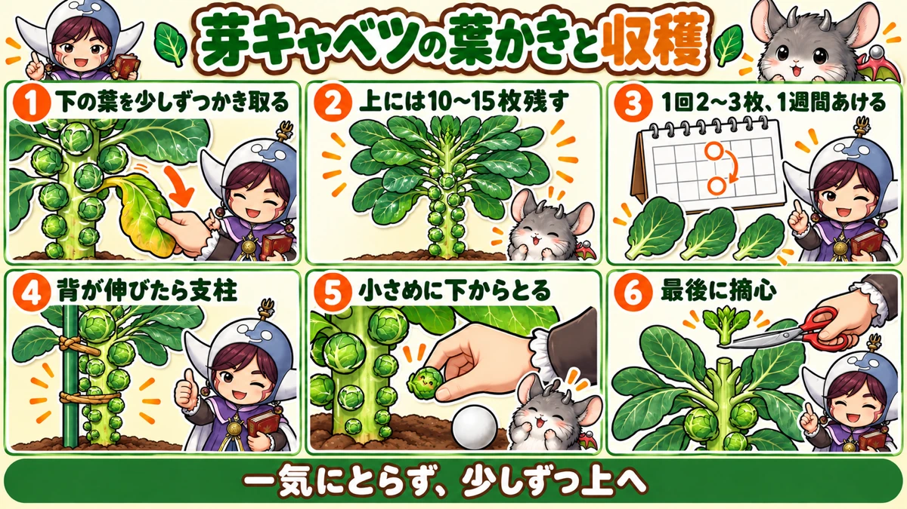

ケールと芽キャベツの決定版｜葉を少しずつ長くとるケールと、わき芽を育てる芽キャベツの苗作り・植えつけ・葉かき・収穫

📖 この記事の目次
この記事で分かること
- ケールも芽キャベツも、キャベツのなかま（アブラナ科）です。涼しい気候を好み、育て方の基本はキャベツと同じです。
- ケールは、玉を作らず、葉を食べる野菜です。下の葉から1株2〜3枚ずつかき取っていくと、次々に新しい葉が出て、長いあいだ収穫できます。
- 芽キャベツは、茎の葉のつけ根にできるわき芽を、小さなキャベツに育てる野菜です。下の葉を少しずつかき取って、わき芽に養分を回すのがこつです。
- どちらも苗があまり売られていないので、夏にタネをまいて苗を作るところから始めることが多い野菜です。
- アオムシやアブラムシがつきやすいので、苗のうちから防虫ネットをかけます。
キャベツやブロッコリーは育てたことがあるけれど、ちょっと変わった野菜にも挑戦してみたい。そんな人におすすめなのが、ケールと芽キャベツです。どちらもキャベツのなかまで、育て方の基本は似ています。それでいて、収穫のしかたは、キャベツとはまるでちがいます。
ケールは、1株から何度も葉をかき取って、長く楽しめます。芽キャベツは、背の高い茎に、小さなキャベツがびっしりと並ぶ、見た目にも楽しい野菜です。この記事では、2つの野菜の苗作りから植えつけ、ふだんのお世話、収穫まで、順番に書いていきます。
この記事の読み方
ケールを育てたい人は「ケールの育て方」、芽キャベツを育てたい人は「芽キャベツの育て方」から読んでください。苗作りと虫よけは、2つに共通する話なので、どちらの人も読んでおくと役に立ちます。
早見：ケールと芽キャベツ
ケール
- なかま：アブラナ科（キャベツのなかま。キャベツの原種とも言われる）
- 食べるところ：葉
- タネまき：春と、夏の終わりから秋（寒い地域を除けば、年に2回）
- 苗作り：セルトレイやポットで。本葉5〜6枚で植えつけ
- 収穫：下の葉から、1株2〜3枚ずつ。間を2週間ほどあける
- ポイント：一度にとりすぎない。何株か植えて、順番にとる
芽キャベツ
- なかま：アブラナ科（キャベツのなかま）
- 食べるところ：茎の葉のつけ根にできるわき芽
- タネまき：夏（7月下旬〜8月上旬が目安）
- 植えつけ：9月上旬〜中旬（本葉5枚ほどの苗）
- 収穫：秋の終わりから、年明けごろまで
- ポイント：下の葉を少しずつかき取る。背が高くなったら支柱。最後に摘心

ケールと芽キャベツを知る
キャベツのなかま
ケールも芽キャベツも、キャベツやブロッコリー、カリフラワーと同じなかまです。もとをたどると、同じ祖先から、人がそれぞれ食べたいところを大きくするように選んで育ててきた野菜です。キャベツは、てっぺんの葉を巻かせて玉にしました。ブロッコリーは、花のつぼみを大きくしました。ケールは、葉そのものを大きく、たくさん出るようにしました。芽キャベツは、茎の葉のつけ根にできるわき芽を、小さな玉にしました。
涼しい気候を好む
どちらも、涼しい気候を好む野菜です。暑い時期はあまり得意ではなく、秋から冬にかけての涼しい時期に、よく育ちます。寒さには比較的強く、冬のあいだも収穫を続けられます。
ケールの種類
ケールには、いくつかの種類があります。大きく分けると、葉がちりめんのように細かく縮れた「カーリーケール」（フリルケール）と、キャベツの葉のように、のっぺりと平らな葉が次々に出てくるタイプです。ほかにも、葉が細長く、濃い緑色で表面がでこぼこした、黒キャベツとも呼ばれるカーボロネロなどがあります。
味は、種類によって大きくは変わりませんが、甘みの強いものもあります。少し苦みがあり、パセリとレタスとキャベツをまぜたような味、と言われることもあります。生で食べるのが苦手な人も、炒めると食べやすくなります。
カーリーケールの注意
葉が細かく縮れたカーリーケールは、見た目がかわいらしく、サラダにも向きます。ただ、風が強く砂ぼこりが舞う畑では、縮れた葉のすき間に土が入りこみ、洗うのが大変になることがあります。風の強い畑では、平らな葉のタイプを選ぶか、株元にわらを敷いて土がはねないようにします。
芽キャベツのふしぎな育ち方
キャベツは、てっぺんにひとつだけ玉を作ります。芽キャベツは、太い茎が上へ上へと伸び、その茎に葉がらせん状につきます。そのひとつひとつの葉のつけ根から出てくるわき芽が、小さなキャベツになります。うまく育つと、背丈が50cm以上になり、1株から数十個の小さな芽キャベツがとれることもあります。
苗作り
苗は自分で作ることが多い
キャベツやブロッコリーの苗は、秋になると園芸店にたくさん並びます。一方、芽キャベツやケール、カーボロネロなどの苗は、なかなか見つからないことがあります。タネから苗を作るところから始めると、確実に育てられます。
タネまきの時期
芽キャベツは、7月下旬から8月上旬ごろにタネをまき、1か月ほどかけて本葉5枚ほどの苗に育て、9月上旬から中旬に植えつけるのが目安です。ケールは、寒い地域でなければ、春と、夏の終わりから秋の、年に2回タネまきができます。秋に収穫するなら、夏の終わりごろにまきます。
苗作りの手順
- 小さめのポット（直径8cmほどのもの）や、セルトレイに、タネまき用の土を入れる
- タネを数粒ずつまき、薄く土をかぶせて、たっぷり水をやる
- 芽が出るまで、土を乾かさないようにする
- 芽が出て育ってきたら、元気なものを残して少しずつ間引き、本葉5〜6枚までに1本にする
- 防虫ネットをかけて、虫を防ぐ
- 1か月ほどで本葉5枚ほどになったら、植えつける
ケールは、本葉が5〜6枚になったところで、1つの穴に1本にして育てます。
夏の苗作りは、日ざしと暑さに注意
夏のタネまきは、強い日ざしと暑さをどうよけるかがポイントです。風通しがよく、明るい日陰、木陰のような場所に置くのが理想です。ちょうどよい場所がなければ、日よけ用のネット（遮光ネット）を張って、日ざしを和らげます。
苗にも防虫ネット
夏から秋は、アオムシやアブラムシなど、キャベツのなかまを好む虫がたくさんいます。タネをまいたら、ポットごと防虫ネットで覆います。苗が大きくなって、葉がネットにふれると、ネットの外から卵を産みつけられることがあるので、ネットは苗から少し離して、広めにかけます。
ポットへのタネのまき方
ポットにまくときは、土の真ん中にくぼみをつけ、タネを4〜5粒まきます。1粒だけだと、芽が出ないこともあるので、少し多めにまいて、あとで元気なものを残します。まいたら指で軽く押しこみ、まわりから土を寄せてかぶせ、上からぎゅっと押さえます。そのあと水をたっぷりやり、水が引くまで待つと、土の中までしみこみます。
キャベツのなかまの苗は、1か月ほどで植えつけるので、8cmほどの小さなポットで十分に育ちます。トマトやなすのように、長くポットで育てる野菜とはちがい、大きなポットはいりません。
畑に苗床を作る方法
たくさんの苗を作りたいときは、畑の一角に苗床を作って育てる方法もあります。
- 半日陰や、風通しのよい場所に、苗床を作る。苗床の大きさは、長さ120cm、幅60cmほどあれば十分
- タネまきの前に、透明のビニールで覆って太陽熱消毒をしておく。期間は3週間ほどが理想とされる。土の中の虫や雑草のタネを減らせる
- 苗床に、すじを3列ほどつける
- すじに、2〜3cm間隔でタネをまく。あとで1株15cmほどの間隔になるように間引くので、細かくまきすぎない
- 土をかぶせて手でしっかり押さえ、水をまく
- 防虫ネットのトンネルをかける。日当たりのよい場所なら、黒い遮光ネットを重ねるなどして日ざしを和らげる
- 土がからからにならないように水をやり、間引きながら育てる
この方法なら、苗床ひとつで数十株の苗を同時に作れます。ただ、畑の苗床では、苗が根元からかじられて倒れるネキリムシの被害を受けることがあります。太陽熱消毒をしておくと、こうした被害を減らせます。
ケールは、ポットで苗を作るのが確実
ケールは、畑にじかにタネをまくこともできますが、ポットで苗を作ってから植えるほうが、確実に育てられます。タネをまくと数日で芽が出て子葉が開き、そこから本葉が少しずつ増えていきます。高さが10cmほど、本葉が5〜6枚になったら、1本にして畑に植えつけます。
じかまきにするときは、深さ1cmほどの穴を数か所あけて、1粒ずつタネを落とし、まわりの土をかぶせて押さえ、水をやります。

ケールの育て方
植えつけ
本葉が5〜6枚になったら、畑やプランターに植えつけます。ケールは広い場所を必要としないので、プランターでも十分に育てられます。植えつけたら、たっぷり水をやり、すぐに防虫ネットをかけます。
虫を防ぐ
ケールは、アオムシやアブラムシに好まれます。植えつけ直後から防虫ネットをかけておきます。アブラムシがついてしまったときは、数が少ないうちに、指やテープで取りのぞきます。石けんの液をかける方法も知られていますが、農薬のきまりで、虫よけに使うことが認められていない資材です。カーリーケールは、キャベツのなかまの中では比較的虫に強い、とも言われますが、油断はできません。
収穫は下の葉から
ケールの葉は、下のほうほど大きく、上へいくほど小さく、やわらかくなります。収穫するときは、下のほうの大きな葉から、つけ根でかき取ります。
- 大きくしっかりした葉を使いたいときは、下のほうの葉を
- サラダなど、やわらかい葉を使いたいときは、上のほうの若い葉を
一度にとりすぎない
1株から一度にとる葉は、2〜3枚ほどにとどめます。一度にたくさんとると、株が弱って、次の葉が出にくくなります。同じ株からまたとるときは、2週間ほど間をあけます。
毎日のように葉を使いたいときは、何株か植えておき、株を順番に回しながらとっていくと、どの株も弱らせずに長く楽しめます。
長く収穫が続く
ケールは、葉をかき取っても、てっぺんから次々に新しい葉が出てきます。上手に収穫を続けると、かなり長いあいだ楽しめます。茎はだんだん伸びて、キャベツのなかまとは思えないような、木のような姿になっていきます。背が高くなって倒れそうになったら、支柱を立てて支えます。
追肥
葉を次々にとっていくので、肥料が切れると、新しい葉が小さくなります。葉の色が薄くなってきたら、株のまわりに追肥をします。
ケールのタネまきの時期の選び方
ケールは、春にまいて初夏から夏に収穫する方法と、夏の終わりから秋にまいて秋から冬に収穫する方法があります。春まきは、暖かくなるにつれて虫が増えるので、防虫ネットが欠かせません。秋まきは、涼しくなってから育つので、虫の被害が落ち着き、冬のあいだも収穫が続くので、はじめての人には育てやすい時期です。
ケールの品種の選び方
- サラダに使いたい：葉がやわらかく、甘みのあるタイプ。若い葉をとる
- 炒めものやスープに使いたい：葉が大きく、しっかりしたタイプ
- 見た目を楽しみたい：葉が縮れたカーリーケール、濃い緑でこぶのあるカーボロネロ
- 風が強く砂ぼこりの多い畑：葉の平らなタイプ。縮れた葉は土が入りやすい
甘みの強い品種は、通常のケールより食べやすいと言われます。タネの袋の説明を見て、使い方に合ったものを選びます。
ケールの収穫の手順
- 株の下のほうの、大きく育った葉を選ぶ
- 葉のつけ根を持ち、下に向かってそっと引くようにかき取る。かたいときは、はさみで切る
- 1株から2〜3枚とったら、その株はしばらく休ませる
- とった日を覚えておき、2週間ほどたってから、また同じ株からとる
- 黄色くなった古い葉や、虫に食べられた葉は、収穫のついでに取りのぞく
てっぺんの、新しい葉が出てくるところ（成長点）は、決して取らないようにします。ここを取ると、新しい葉が出なくなります。
ケールを長く収穫するための3つのこと
- とりすぎない：1株2〜3枚。2週間ほどあける。てっぺんの成長点は取らない
- 肥料を切らさない：葉の色が薄くなってきたら追肥。プランターは特に切れやすい
- 虫を寄せない：防虫ネットを外さない。葉の裏をときどき見る
この3つを守れば、秋に植えたケールが、冬を越して春先まで葉を出しつづけてくれることもあります。
芽キャベツの育て方
植えつけ
本葉5枚ほどの苗を、9月上旬から中旬に植えつけます。植え穴に苗を置いたら、根鉢と土のあいだに、すき間が残らないようにします。根鉢のまわりにはすき間ができやすいので、指で土を押しこむようにして、しっかり埋めます。植えつけたら、たっぷり水をやり、防虫ネットをかけます。
芽キャベツができる場所
芽キャベツが大きく育ってくると、茎の葉のつけ根から、わき芽がたくさん出てきます。このわき芽が、芽キャベツです。
ただ、茎の下のほう、地面から10cmくらいまでのところにできるわき芽は、あまり大きくなりません。直径1cmほどの小さなものにしかならないことが多いです。茎の上のほうへ育っていくにつれて、ピンポン玉くらい、直径3cmほどの芽キャベツができるようになります。

下の葉を、少しずつかき取る
芽キャベツを大きく育てるために、いちばん大事なのが、下の葉をかき取る作業（葉かき）です。芽キャベツができはじめたら、その横についている葉を、下から順にかき取っていきます。葉を残したままだと、養分が葉にとられて、芽キャベツが大きくなりません。
一気にとらない
葉かきで大事なのは、一気にとらないことです。葉をいっぺんに全部とってしまうと、光合成ができなくなり、株がうまく育たなくなります。急に葉を減らすと、株への刺激が強すぎて、育ちが遅れることもあります。
- 最初は、下から3分の1くらいまでの葉をとる
- そのあとは、1回に2〜3枚ずつとり、次は1週間ほどあけてまたとる
- 株の上のほうには、いつも10〜15枚くらいの葉を残しておく
- 今週は下から10cmまで、来週は20cmまで、というように、少しずつ上へ進める
どの葉をとるか迷ったら、虫に食べられて大きく欠けた葉など、状態の悪い葉からとります。
背が高くなったら支柱
芽キャベツは、背が高く伸び、芽キャベツがたくさんつくと、その重みで倒れやすくなります。株のそばに支柱を立てて、茎をひもで結んでおきます。
追肥は月に1回
芽キャベツは、長いあいだ畑で育ち、たくさんの芽キャベツを太らせます。本当は収穫のたびに追肥をしたいところですが、なかなかそうもいかないので、月に1回くらいは追肥をして、肥料を切らさないようにします。
最後に摘心
芽キャベツの収穫が進み、もうこれ以上、上のほうには新しい芽キャベツができないな、と思う時期がきたら、いちばん上の成長点を、はさみで切り取ります（摘心）。こうすると、上へ伸びようとする養分が、下のほうの芽キャベツに回り、大きく育ちます。
収穫
芽キャベツは、9月に植えると、11月ごろから収穫が始まり、うまく育てると年明けごろまで収穫が続きます。芽キャベツは下のほうから順に大きくなるので、下から順にとっていきます。
- ピンポン玉より少し小さいくらいの大きさで、早めにとる
- 大きくなった下の芽キャベツをとらないでいると、上にある小さな芽キャベツが、なかなか大きくならない
- とったら、そのまわりの葉も、かき取ってかまわない
収穫が遅れないように、こまめにとっていくことが、次々に芽キャベツを太らせるこつです。
芽キャベツの葉かきの手順
- 株の下のほうから、芽キャベツができはじめた位置の葉を確かめる
- 下から順に、葉のつけ根を持って、下に向かってかき取る。かたいときは、はさみで切る
- その日にとるのは2〜3枚まで。芽キャベツそのものを傷つけないように気をつける
- 株の上のほうに、葉が10〜15枚残っているかを確かめる
- 1週間ほどたったら、また下から2〜3枚とる
芽キャベツのすぐ横についている葉は、芽キャベツを押しつぶしたり、日を遮ったりするので、優先してとります。
芽キャベツの株間
芽キャベツは、背が高く、葉も大きく広がります。株と株のあいだは広めにとり、葉が重なりすぎないようにします。風通しがよいと、病気や虫も出にくくなり、葉かきの作業もしやすくなります。
カーボロネロの育て方
カーボロネロは、葉が細長く、濃い緑色で、表面がちりめんのようにでこぼこしたケールのなかまです。育て方は、ケールや芽キャベツとほぼ同じで、夏にタネをまいて1か月ほどで苗を作り、秋に植えつけます。収穫は、ケールと同じように、下の葉から少しずつかき取ります。
芽キャベツ1株の流れ
- 植えつけから1か月ほど：葉が増え、茎が伸びはじめる。防虫ネットの中で見回り
- 植えつけから2か月ほど：茎の葉のつけ根に、小さな芽キャベツができはじめる。下の葉かきを始める
- 背丈が30〜40cmほど：葉の数がとても多くなる。下から少しずつ葉をかき取り、支柱を立てる
- 秋の終わりから：下のほうの芽キャベツから、ピンポン玉より少し小さいうちに収穫。月に1回追肥
- 収穫の後半：上にもう芽キャベツができなくなったら、てっぺんを摘心して、残りを太らせる
冬の管理
秋のうちに株を大きくしておく
秋冬野菜は、寒くなると育ちがゆっくりになります。冬になってから大きくしようとしても、なかなか大きくなりません。11月中にある程度の大きさに育てておくことが大切です。小さいまま冬を迎えそうな株は、保温をして葉を増やします。寒くなってから追肥で取り返そうとすると、かえって悪い影響が出ることもあります。
鳥に注意
年が明けて、いちばん寒い時期になると、食べ物が少なくなった鳥が、畑のキャベツのなかまをねらってやってきます。ケールや芽キャベツの葉も、ぼろぼろにされることがあります。ネットで囲ったり、トンネルをかけたりして守ります。畑のまわりの木に、鳥が何羽もとまって様子をうかがっているようなら、早めに対策をします。
寒さへの備え
ケールも芽キャベツも寒さには比較的強い野菜ですが、寒さの厳しい地域では、不織布をかけたり、トンネルにしたりして守ります。トンネルにする前には、中に虫が残っていないかを確かめます。
つきやすい虫と、その見回り
アオムシ、コナガ
外側の葉に穴をあけて食べる虫です。葉の裏に卵を産むので、葉の裏をよく見ます。見つけたら取りのぞきます。防虫ネットの中でも、ときどき葉の裏を見ておきます。
アブラムシ
新しい葉や、葉の裏に群がって汁を吸います。数が少ないうちに、指やテープで取りのぞきます。芽キャベツの小さな玉のすき間に入りこむと取りにくくなるので、早めに見つけます。肥料をやりすぎると、アブラムシが増えやすくなります。
ヨトウムシ
夜に出てきて葉を食べる虫です。秋が深まると虫の数自体は減ってきますが、大きく育ったヨトウムシは、一晩でたくさんの葉を食べてしまいます。葉に大きな穴があいていたら、昼間に株元の土を少し掘って探し、見つけしだい取りのぞきます。
株の真ん中を食べる虫
苗のうちは、株の真ん中、新しい葉が出てくるところを食べる虫（シンクイムシ）にも気をつけます。真ん中に糸や茶色い汚れがあったら、つまようじなどでそっと広げて探します。ケールは、てっぺんの成長点を食べられると、新しい葉が出なくなります。
見回りのチェック表
- 葉の表と裏に、穴や虫、卵がないか
- 株の真ん中に、糸や茶色い汚れがないか
- 防虫ネットのすそにすき間がないか。葉がネットにふれていないか
- ケールは、前にとった日から2週間たったか
- 芽キャベツは、下の葉をかき取る時期か。上に10〜15枚残っているか
- 芽キャベツは、倒れそうになっていないか。支柱は足りているか
- 葉の色が薄くなっていないか。追肥の時期か
同じ場所に続けて植えない
ケールも芽キャベツも、キャベツやブロッコリー、白菜、大根などと同じアブラナ科です。同じ場所でアブラナ科の野菜を続けて育てると、土の中の病気や虫が増えやすくなります。前の年にアブラナ科を育てた場所は避けて植えます。
プランターで育てる
ケールはプランター向き
ケールは、1株ずつ葉をかき取って使うので、ベランダのプランターでも十分に楽しめます。深さのある、大きめのプランターに、市販の野菜用の培養土を入れて植えます。日当たりのよい場所に置き、土の表面が乾いたら、たっぷり水をやります。
プランターの手順
- 本葉5〜6枚の苗を用意する
- プランターに培養土を入れ、苗の根鉢がすっぽり入る穴を掘る
- 苗を植え、根鉢のまわりのすき間を指で押さえて埋める
- たっぷり水をやる
- プランター用の防虫ネットや、目の細かいネットをかぶせる
- 葉が育ってきたら、下の葉から2〜3枚ずつかき取る
プランターは土の量が限られるので、肥料が切れやすくなります。葉の色が薄くなってきたら、少しずつ追肥をします。
芽キャベツをプランターで育てるとき
芽キャベツは背が高くなるので、深さのある大きめのプランターに1株ずつ植えます。風で倒れやすいので、プランターの土に支柱をしっかりさし、茎を結んでおきます。ベランダの手すりなどに支柱を結びつけておくと、より安定します。
季節ごとにやること（一般的な地域の目安）
- 7月下旬〜8月上旬：芽キャベツのタネまき。ポットで苗を作る。日よけと防虫ネット
- 8月下旬〜9月：ケールのタネまき、苗作り
- 9月上旬〜中旬：芽キャベツの植えつけ。防虫ネット
- 9月〜10月：ケールの植えつけ。虫の多い時期。ネットの中をこまめに見る
- 10月〜11月：芽キャベツの葉かきを始める。背が伸びたら支柱。ケールの収穫が始まる
- 11月〜年明け：芽キャベツの収穫。月に1回の追肥。上にできなくなったら摘心
- 1月〜2月：鳥よけ。寒さの厳しい地域は防寒
説明が分かれるところ
葉を何枚残すか
芽キャベツの葉かきで、株の上のほうに残す葉の数は、10枚以上という説明もあれば、15枚くらいという説明もあります。どちらも、一気にとりすぎて光合成ができなくならないように、という目的は同じです。株の大きさや葉の大きさを見て、10〜15枚を目安に、少しずつかき取っていきます。
ケールはおいしいか
ケールは、青汁の原料として知られ、苦みがあって生では食べにくい、と感じる人もいます。一方、生でも食べやすいように改良された品種もあり、若い葉はサラダにも向く、という声もあります。炒めたり、スープに入れたりすると食べやすい、という人も多くいます。いくつかの品種や食べ方を試して、好みのものを見つけてください。
芽キャベツの摘心は、いつするか
芽キャベツの摘心は、上のほうにもう新しい芽キャベツができなくなったころ、収穫の後半に行うのが基本です。早く摘心しすぎると、そのあとにできるはずだった上の芽キャベツが、できなくなってしまいます。株のてっぺんを見て、新しい葉の間にまだ小さな芽キャベツのもとができているうちは、摘心を待ちます。
よくある失敗
ケールの葉を、一度にたくさんとった
株が弱って、新しい葉が出にくくなります。1株2〜3枚ずつにとどめ、何株かを順番に回します。
芽キャベツの葉を、一気に全部とった
光合成ができなくなり、芽キャベツがうまく育ちません。少しずつ、上には10〜15枚を残してかき取ります。
芽キャベツの葉をとらずに放っておいた
養分が葉にとられ、芽キャベツが大きくなりません。芽キャベツができはじめたら、葉かきを始めます。
ケールのてっぺんの葉まで摘んでしまった
てっぺんの成長点を取ると、新しい葉が出なくなり、収穫がそこで終わってしまいます。やわらかい葉がほしいときも、てっぺんのすぐ下の、開いた若い葉をとるようにし、真ん中の芽は残します。
下の芽キャベツを大きくしすぎた
下の芽キャベツをとらないでいると、上の芽キャベツがなかなか大きくなりません。ピンポン玉より少し小さいくらいで、早めにとります。
苗を植えたのに、防虫ネットをかけなかった
アオムシやアブラムシに、葉が食べられてしまいます。植えつけの日のうちにネットをかけます。
芽キャベツが倒れた
背が高くなり、芽キャベツの重みで倒れることがあります。早めに支柱を立てて、茎を結んでおきます。
よくある質問
ケールはプランターでも育ちますか
育ちます。ケールは広い場所を必要としないので、プランター向きの野菜です。葉を少しずつかき取って使えるので、ベランダで育てて、使う分だけとるのにも向いています。
芽キャベツはプランターでも育ちますか
背が高くなり、長いあいだ育てるので、大きめで深めのプランターを使います。倒れないように、支柱を立てておきます。
植えつけが遅れてしまいました
ブロッコリーやケールは根が丈夫なので、植えつけが少し遅れても、取り返しがききやすい野菜と言われます。一方、キャベツや白菜、カリフラワーなど、玉や花蕾をしっかり作る必要がある野菜は、遅れると、うまく玉や花蕾ができないことがあります。芽キャベツも、寒くなるまでに株を大きく育てておくことが大切なので、植えつけの時期はなるべく守ります。
芽キャベツの下のほうが、小さいまま開いてしまいました
茎の下のほうにできる芽キャベツは、大きくならないことが多いものです。小さいうちに開いてしまったものは、そのまま摘みとってかまいません。上のほうの芽キャベツに養分を回します。
ケールの茎が、どんどん伸びて木のようになりました
ケールは、下の葉をかき取りながら育てると、茎がだんだん伸びて、木のような姿になります。てっぺんから新しい葉が出ているうちは、収穫を続けられます。倒れないように支柱で支えます。
春になったら、花が咲きそうです
ケールも芽キャベツも、春になって暖かくなると、茎がぐんと伸びて花のつぼみをつけます。花が咲きはじめると、葉はかたくなり、芽キャベツも玉がほどけてきます。この時期が、収穫の終わりの目安です。つぼみがやわらかいうちは、菜の花のように摘みとって食べることもできます。
ケールの葉に、白い粉のようなものがついています
ケールやキャベツのなかまの葉の表面には、ろうのような白っぽい粉がついていることがあります。これは、葉が水をはじいたり、乾燥から身を守ったりするためのもので、病気ではありません。洗えば落ちます。白い粉が、こすっても取れずに広がっていくようなときは、うどんこ病などを疑います。
ブロッコリーとケールをかけあわせた野菜もあると聞きました
ブロッコリーとケールをかけあわせた品種もあります。わき芽を菜の花のように摘みとって、茎も葉もつぼみも食べられるのが特徴です。菜花のなかまとして売られていることもあります。
学ぶ：キャベツのなかまの変身🔬
ひとつの祖先から、いろいろな野菜へ
キャベツ、ブロッコリー、カリフラワー、ケール、芽キャベツ、コールラビなどは、もとをたどると、同じひとつの種類の植物から生まれたと考えられています。人が、葉の大きいもの、つぼみの大きいもの、わき芽の大きいものなど、それぞれ食べたいところが大きくなった株を選んで、タネをとり、育てることをくり返すうちに、まったくちがう姿の野菜になっていきました。ケールは、その中でも、もとの姿に近いと言われる野菜です。
なぜ、下の葉をとると芽キャベツが太るのか
植物は、葉で光合成をして養分を作り、それを体のあちこちに配ります。下のほうの古い葉は、上の葉の陰になって光が当たりにくく、作る養分より使う養分のほうが多くなることがあります。こうした葉をかき取ると、そこに使われていた養分が、葉のつけ根のわき芽、つまり芽キャベツに回るようになります。ただし、上のほうの元気な葉まで取ってしまうと、養分を作る工場そのものが減ってしまうので、少しずつ、上の葉は残しながら取るのです。
なぜ、下のほうの芽キャベツは小さいのか
茎の下のほうのわき芽は、株がまだ小さく、葉の数も少なかったころにできたものです。そのころの株には、わき芽を太らせる余裕があまりありません。さらに、株が育つにつれて、下のほうは上の葉の陰になり、光も届きにくくなります。茎の上のほうへいくほど、株が大きく育ってからできたわき芽になるので、養分を受けとりやすく、大きな芽キャベツになりやすいのです。
なぜ、ケールは葉をとっても次々に出てくるのか
ケールは、玉を作らない野菜です。てっぺんの成長点は、葉を巻かずに、新しい葉を次々に外へ広げていきます。下の古い葉をかき取っても、成長点が残っていれば、そこから新しい葉が出つづけます。キャベツのように、玉を作ったところで育ちが一区切りつく野菜とちがい、成長点が元気なあいだは、収穫を続けられるのです。
なぜ、摘心すると下の芽キャベツが大きくなるのか
植物は、いちばん上の成長点に、優先して養分を送る性質があります。成長点を切り取ると、上へ伸びるために使われていた養分が、わき芽のほうへ回るようになります。芽キャベツの最後の摘心は、この性質を利用して、残った芽キャベツを太らせる作業です。
まとめ
ここまで読んでくださって、ありがとうございます！
ケールと芽キャベツのポイントを、もう一度まとめておきます。
- どちらもキャベツのなかま。涼しい時期によく育つ。苗はタネから作ることが多い
- 苗のうちから防虫ネット。ネットは苗から離して広めにかける
- ケールは、下の葉から1株2〜3枚ずつ。2週間ほどあけて、何株かを順番に
- 芽キャベツは、下の葉を少しずつかき取り、上には10〜15枚残す。背が伸びたら支柱
- 芽キャベツは、ピンポン玉より少し小さいうちに下からとる。最後に摘心
ケールなら1株、芽キャベツなら2〜3株から始めてみてください。冬の畑に、いつでもとれる緑があるのは、思った以上にうれしいものです🥬
防虫ネット
アオムシやアブラムシに好まれるので、苗のうちからかけます。葉がネットにふれないよう広めに。


支柱
芽キャベツは背が高くなり、玉の重みで倒れやすくなります。早めに立てて茎を結びます。
![[商品価格に関しましては、リンクが作成された時点と現時点で情報が変更されている場合がございます。]](https://hbb.afl.rakuten.co.jp/hgb/56d221a0.da732c49.56d221a1.b57a6709/?me_id=1230952&item_id=10017113&pc=https%3A%2F%2Fthumbnail.image.rakuten.co.jp%2F%400_mall%2Fnou-nou%2Fcabinet%2F5010356000109-01.jpg%3F_ex%3D240x240&s=240x240&t=picttext "[商品価格に関しましては、リンクが作成された時点と現時点で情報が変更されている場合がございます。]")
セルトレイ
ケールなど苗が売っていない野菜は、夏にタネをまいて苗作りから。
![[商品価格に関しましては、リンクが作成された時点と現時点で情報が変更されている場合がございます。]](https://hbb.afl.rakuten.co.jp/hgb/55e75fe5.20db4cd1.55e75fe7.d1ec32cc/?me_id=1194164&item_id=10000832&pc=https%3A%2F%2Fthumbnail.image.rakuten.co.jp%2F%400_mall%2Fgardening%2Fcabinet%2Fikubyoukesoku%2Fimg10431256665.jpg%3F_ex%3D240x240&s=240x240&t=picttext "[商品価格に関しましては、リンクが作成された時点と現時点で情報が変更されている場合がございます。]")
次に読む
記事一覧へ